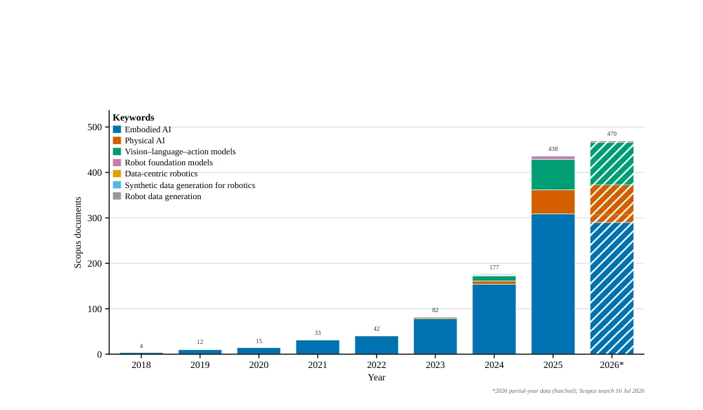
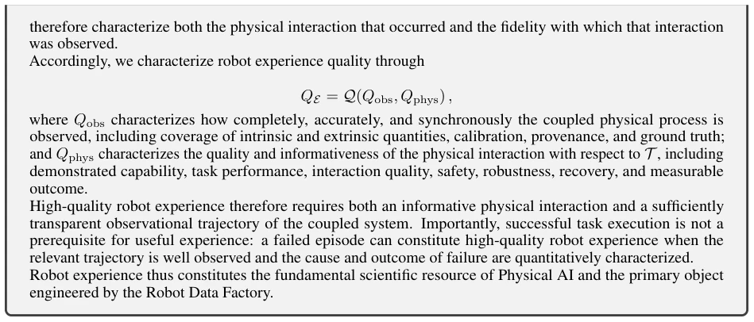
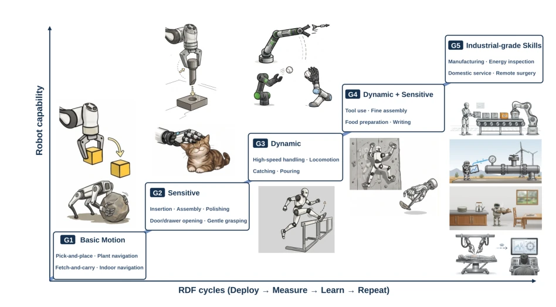
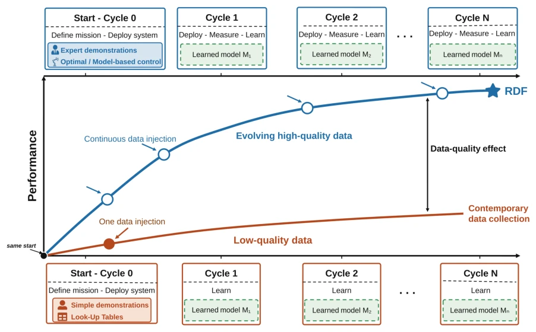
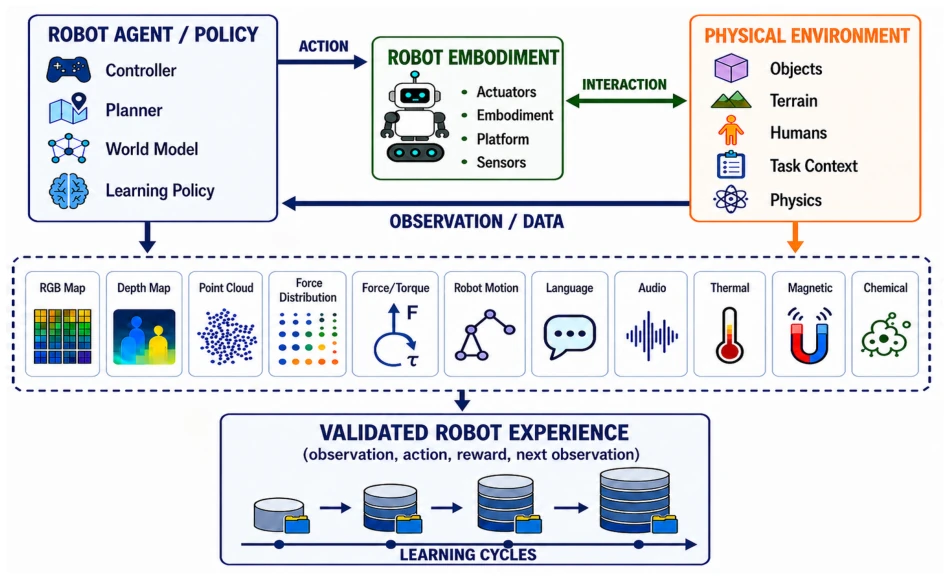
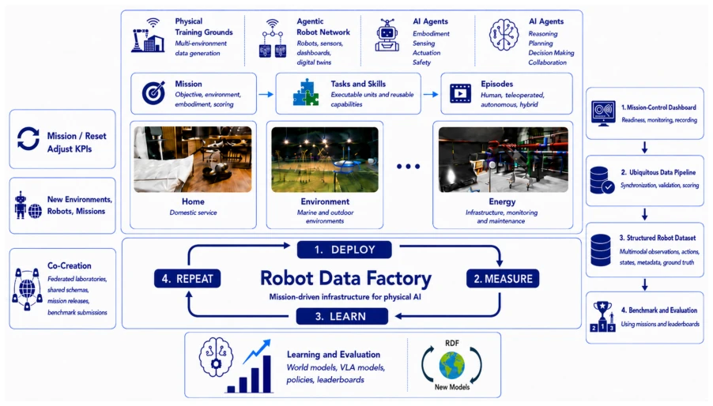
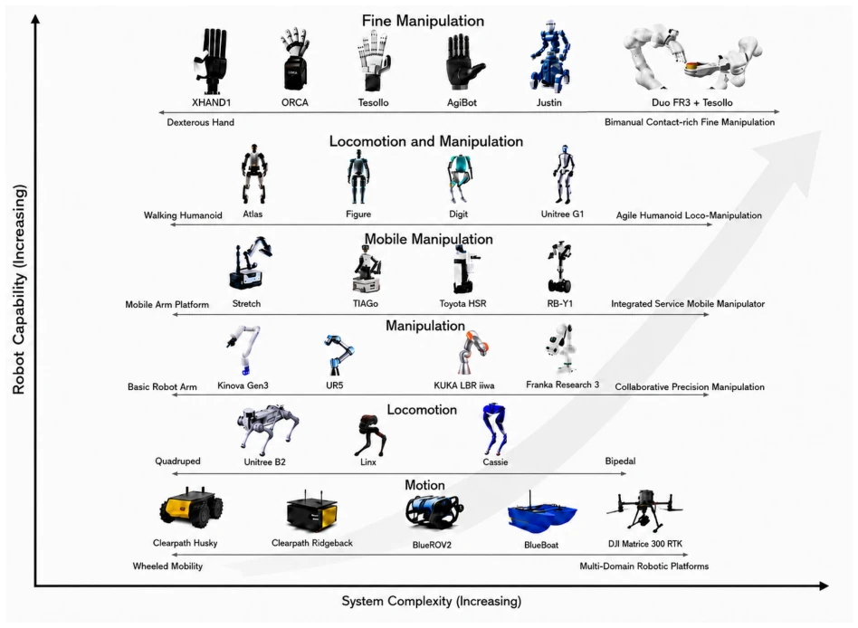
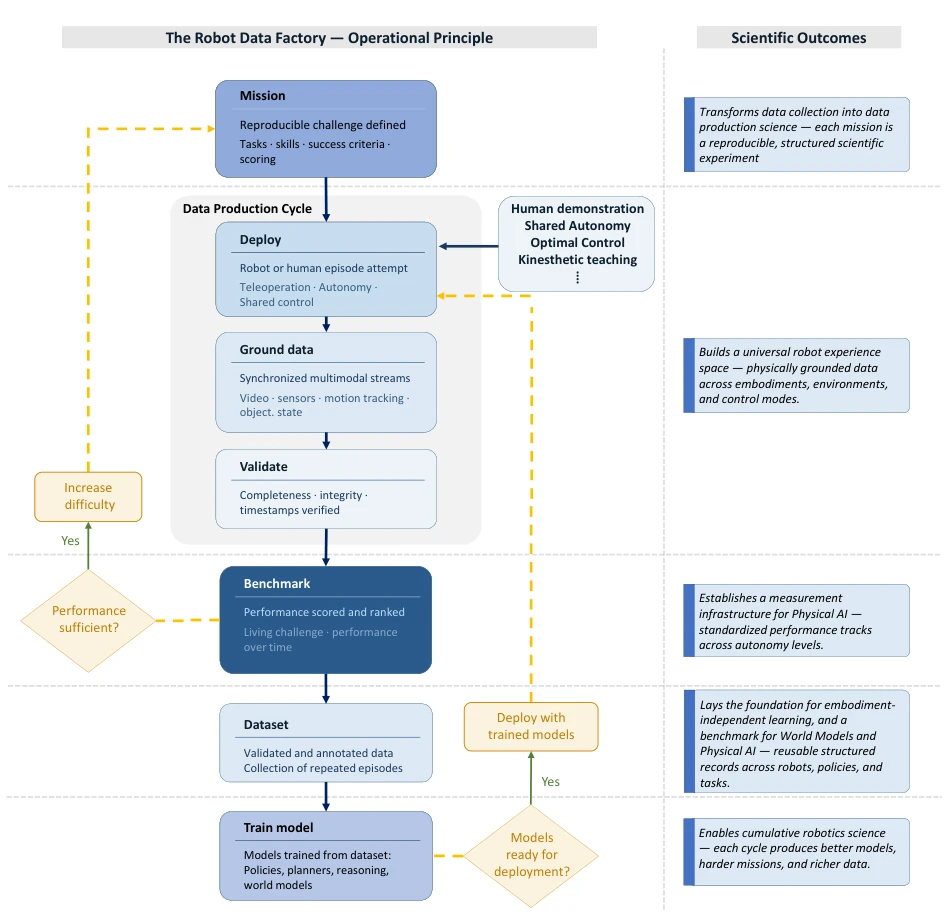
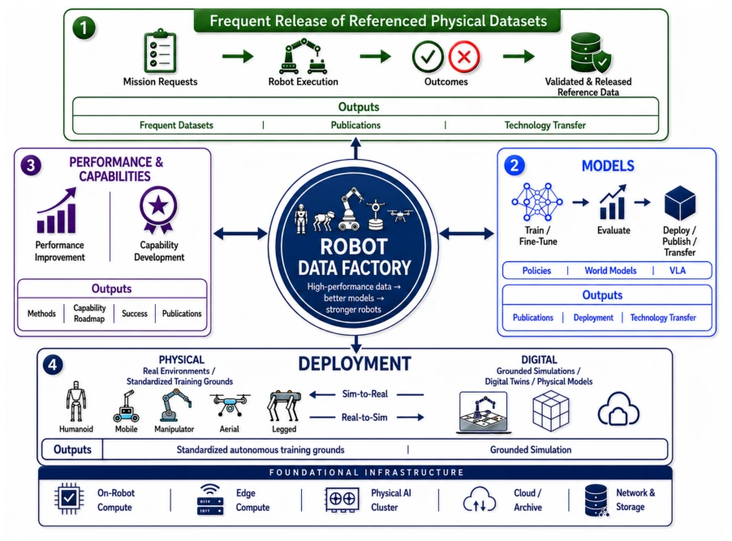
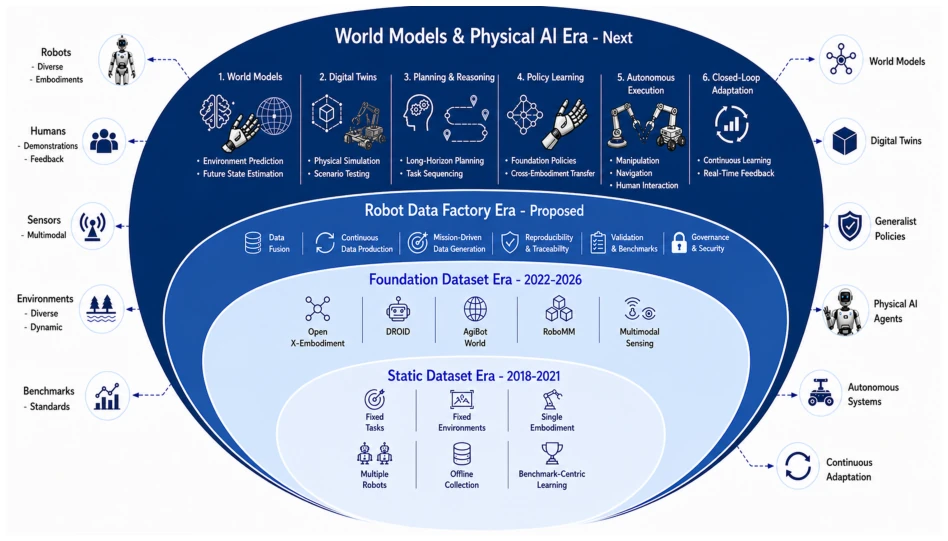

Sami Haddadin, Ivan Laptev, Ian Reid, Dezhen Song, Cesare Stefanini, Abdalla Swikir abspdf
论文点评Review
这篇论文与其说是在讲一个数据集，不如说是在给物理AI界画一张“基建狂魔”的蓝图。作者敏锐地指出，现在的机器人研究陷入了“数据堆砌”的误区，以为数据量大了模型就能飞，却忽略了数据背后的“物理真实性”和“可复现性”。Robot Data Factory (RDF) 试图把机器人数据从“被动采集的废料”升级为“主动工程化的科学资源”，这个立意确实够硬核。不过，通篇读下来，最大的槽点在于其“宏大叙事”与“落地难度”之间的巨大鸿沟。它描绘了一个由全球实验室联网、多模态同步、实时验证的乌托邦，但在没有展示任何真实世界大规模部署的实证数据前，这种“基础设施论”听起来更像是一个昂贵的概念验证（PoC）愿景，而非即刻可用的解决方案。对于急需发论文的学者来说，这更像是一个需要十年才能建成的“达摩克利斯之剑”，而非手边的“瑞士军刀”。
This paper is less about describing a dataset and more about drawing a blueprint for an 'infrastructure powerhouse' in the physical AI community. The authors keenly point out that current robot research has fallen into the misconception of 'data stacking', believing that larger data volumes will make models fly, while ignoring the 'physical authenticity' and 'reproducibility' behind the data. Robot Data Factory (RDF) attempts to upgrade robot data from 'passively collected waste' to 'actively engineered scientific resources', and this perspective is indeed quite hardcore. However, reading through, the biggest criticism lies in the huge gap between its 'grand narrative' and 'implementation difficulty'. It depicts a utopia of globally networked laboratories, multi-modal synchronization, and real-time verification, but before demonstrating any empirical data on large-scale real-world deployment, this 'infrastructure theory' sounds more like an expensive Proof of Concept (PoC) vision than an immediately available solution. For scholars urgently needing to publish papers, this is more like a 'Sword of Damocles' that takes ten years to build, rather than a 'Swiss Army Knife' at hand.
The core pain point facing existing robot research is: although there is much data, it lacks 'verified physical experience'. Traditional static datasets (such as EmbodiedQA [7], R2R [8], ALFRED [10]) are often limited to single platforms and specific tasks, and lack external Ground Truth and synchronized multi-modal observations, making data difficult to support cross-embodiment learning and world model construction. As research evolves from basic locomotion to fine manipulation, the complexity of physical interaction rises exponentially, and existing benchmarks are mostly static evaluations, unable to capture the dynamic evolution process of robot capabilities. Literature points out that simply increasing model scale and data volume is no longer sufficient to solve the bottleneck of physical AI; the key lies in the lack of high-fidelity, reproducible 'physical experience' (Robot Experience). Existing datasets such as Open X-Embodiment [18] and DROID [19] have expanded scale, but have not yet solved the closed-loop problem of data generation and verification, leading to limited generalization ability of algorithms in the real world. RDF aims to solve this 'data silo' and 'verification missing' problem, engineering physical experience as core scientific resources for production.

Figure 1: Year-wise Scopus publication trend related to the Robot Data Factory paradigm from 2018 to 16 July 2026. The search used representative terms covering robot data generation, synthetic data generation for robotics, data-centric robotics, embodied AI, vision-language-action models, robot foundation models, and physical AI. The sharp increase after 2023 indicates growing research activity around scalable robot data generation and physically grounded learning. The 2026 count represents partial-year data.

Figure 1 shows the rapid growth since 2023 of work on robot data generation, data-centric robotics, embodied AI, and Physical AI. This growth increases the need for infrastructure that can generate and evaluate physical experience systematically.

Figure 2: Motivation for the Robot Data Factory through the progression of robotic capability and compute burden. The figure illustrates five representative grades of robotic capability (G1–G5), ranging from basic motion to human-level manipulation and embodied intelligence. As robots progress through these capability grades, the required data quality, embodiment diversity, real-time inference, and compute resources increase, motivating a dedicated infrastructure for generating high-performance, validated, and referenced physical datasets. Concept and scientific content by the authors; graphical realization developed iteratively with assistance from OpenAI ChatGPT.
RDF proposes a 'Mission-Driven' closed-loop generation framework, whose core logic is to transform robot data production from 'collection' to 'engineering manufacturing'. The overall Pipeline follows the flywheel mechanism of 'Deploy - Measure - Learn - Repeat'. First, the system constructs heterogeneous physical training grounds through a 'Multi-Chamber' architecture (such as Home, Environment, Energy chambers), where each chamber represents a specific physical scenario. Second, it introduces an 'Agentic Robot Network' and 'Mission-Control', decomposing tasks into reproducible 'Mission - Skill - Episode' hierarchies. In terms of data flow, RDF emphasizes 'synchronized multi-modal observation', not only recording robot states but also forcibly synchronizing environment states, haptic feedback, and external Ground Truth, ensuring the completeness of the causal chain of physical interaction. After data generation, it undergoes cleaning, verification, and annotation through a 'Ubiquitous Data Pipeline' to generate reusable 'robot experiences'. Finally, these experience data are directly used to train VLA models, world models, and embodied policies, and are updated to the 'Pitstop Leaderboard' ranking, driving the next round of harder challenges. This architecture breaks the static attributes of traditional datasets, making it an evolving 'living' infrastructure over time.

Figure 3: Experience quality and continued data collection influence iterative policy improvement for the same robot and mission. Richer, physically grounded experience can support continued improvement, whereas limited coverage or observation fidelity can constrain learning. The trajectories are schematic and do not represent experimental results.

Figure 4: Closed-loop generation of robot experience. Physical AI emerges through continuous interaction between robot and environment, where every action produces new multimodal experience that is validated, stored, and reused for learning. Concept and scientific content by the authors; graphical realization developed iteratively with assistance from OpenAI ChatGPT.

Figure 5: Operational architecture of the proposed Robot Data Factory. The figure describes how the infrastructure organizes physical training grounds, agentic robot networks, robot agents, missions, tasks and skills, and execution episodes into a continuous Deploy, Measure, Learn, and Repeat cycle. During deployment, robots execute missions across representative environments, including Home for domestic service, Environment for marine and outdoor operations, and Energy for infrastructure monitoring and maintenance. During measurement, mission-control services, benchmark and evaluation tools, ubiquitous data pipelines, and structured robot datasets convert raw robot experience into validated records. During learning, the validated data support world models, VLA models, embodied policies, l

Figure 7: Representative landscape of robotic embodiments organized according to increasing system complexity and capability level. The figure covers multiple embodiment categories, including end effectors, mobility platforms, manip- ulators, legged locomotion robots, aerial and marine robots, and highly capable humanoids. The progression highlights the growing diversity of modern robotic platforms and the associated challenges in data collection, benchmarking, transfer learning, safety validation, and cross-embodiment generalization. This diversity motivates the need for a Robot Data Factory that can support heterogeneous robots, environments, missions, sensing modalities, and evaluation protocols within a unified infrastructure.

Figure 9: Mission-driven methodology of Robot Data Factory. A mission defines a reproducible challenge with tasks, success criteria, and scoring rules. Within each mission, robot or human episodes are deployed, synchronized multimodal data are recorded, and episodes are validated against mission criteria. Validated episodes feed two parallel outputs: a dataset used to train robot models and policies, and a benchmark leaderboard that tracks performance over time. As trained models reach sufficient capability, they replace human demonstrations and drive autonomous episode deployment, progressively reducing reliance on teleoperation. As capability improves, mission difficulty increases and the cycle repeats, forming a living training ground rather than a static benchmark.
The main contribution of this paper lies in the proposal of the methodological framework and infrastructure scale analysis, rather than traditional algorithm performance comparison experiments. The paper does not demonstrate specific SOTA performance improvements of VLA models on RDF data, nor does it provide ablation comparisons with existing datasets (such as Open X-Embodiment). Instead, the authors perform numerical analysis of 'Computing and Storage Scaling Laws' (Appendix B), estimating infrastructure requirements under different robot nodes, data streams (video, point clouds, haptics), and training loads, proving the engineering feasibility and cost model of this framework. Additionally, the article shows the operational status of the MBZUAI deployed initial core (Home, Environment, Energy three chambers), proving the implementation of 'Mission-Driven' and 'Multi-modal Synchronization' in the prototype system. Although lacking specific algorithm performance improvement data, it argues the theoretical advantages of this framework in long-term robot capability improvement by demonstrating the roadmap of 'Capability Progression' and the closed-loop logic of the 'Cyber-physical improvement mechanism'.
其他图片Other Figures

Figure 6: Cyber-physical improvement mechanism of the Robot Data Factory. The figure shows how referenced physical datasets are generated through mission requests, robot execution, outcome validation, and data release. These datasets support model training, evaluation, deployment, publication, and technology transfer. Improved models are then deployed into physical environments and grounded simulations, supporting sim-to-real and real-to-sim iteration. The resulting performance improvement and capability development are tracked through measurable outputs such as methods, capability roadmaps, success rates, publications, standardized autonomous training grounds, grounded simulations, and technology-transfer pathways. The foundation infrastructure includes on-robot compute, edge compute, Phy

Figure 8: Evolution of robotic data infrastructures from the Static Dataset Era (2018–2021), through the Foundation Dataset Era (2022–2026), toward the Robot Data Factory Era and the subsequent World Models and Physical AI Era. The innermost layer represents early robotic datasets characterized by fixed tasks, fixed environments, limited embodiments, offline collection, and benchmark-centric learning. The middle layer highlights large-scale foundation datasets and cross-embodiment learning resources, including Open X-Embodiment, DROID, AgiBot World, and RoboMM, which introduced broader embodiment diversity, multimodal sensing, and larger-scale demonstrations. The Robot Data Factory layer represents the proposed infrastructure for continuous data production, mission-driven data generation,